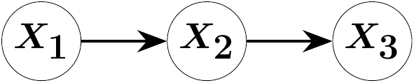
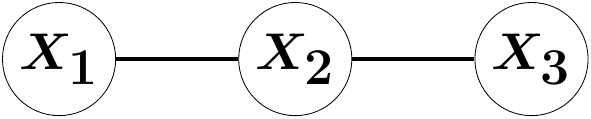
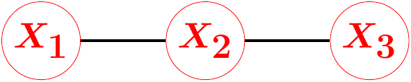

using OscarLeopold Mareis ![]()
Generic Identification in Linear Causal Models with OSCAR
| Resource | Information |
|---|---|
| Git + DOI | Git Zenodo |
| Short Description | This notebook demonstrates the computational algebraic procedure to determine the identifiability of model parameters in linear graphical models. |
Linear Structural Equation Models
Let \(\Lambda \in \mathbb{R}^{d\times d}\) be an upper-diagonal design matrix and let \(\varepsilon \sim P_\varepsilon\) be a centered random error vector with covariance matrix \(\Omega\). A random variable \(X\) is said to follow a linear model if it satisfies the structural equations \[ X = \Lambda^\top X + \varepsilon. \] The resulting covariance matrix \(\Sigma\) on a dataset \((X^{i})_{i \in [n]}\) defines the following system of equations: \[\Sigma := Cov(X) = (Id - \Lambda^\top)^{-T} \Omega (Id - \Lambda)^{-1} \] These equations specify algebraic relations via polynomials on the observed covariance matrix. They can be used to verify a proposed model class and to identify model parameters.
Acyclic Directed Mixed Graphs (ADMGs)
Let the four-variate random vector \(X\) follow the structural equations \[ \begin{pmatrix} X_1 \\ X_2 \\ X_3 \\ X_4 \end{pmatrix} = \begin{pmatrix} 0 & 0 & 0 & 0 \\ 0 & 0 & 0 & 0 \\ \lambda_{12} & \lambda_{13} & 0 & 0 \\ 0 & 0 & \lambda_{34} & 0 \end{pmatrix} \begin{pmatrix} X_1 \\ X_2 \\ X_3 \\ X_4 \end{pmatrix} + \begin{pmatrix} \varepsilon_1 \\ \varepsilon_2 \\ \varepsilon_3 \\ \varepsilon_4 \end{pmatrix} \quad , Cov(\varepsilon) = \begin{pmatrix} \omega_{11} & 0 & 0 & 0 \\ 0 & \omega_{22} & \omega_{23} & 0 \\ 0 & \omega_{23} & \omega_{33} &\omega_{34} \\ 0 & 0 & \omega_{34} & \omega_{44} \end{pmatrix}.\] This random vector satisfies Markov properties indicating (conditional) independencies with respect to the following graph:

The direct effects \(\lambda_{21}\), \(\lambda_{31}\) and \(\lambda_{43}\) correspond to edges in the graph are parameters of interest. In practice, direct effects can for example model the effectiveness of a medical drug, the effectiveness of an institutional policy or of machine settings on the manufacturing quality. Experts or statistical structure learning can infer a potential graph inducing a structural model in which parameters are to be estimated.
There exists mathematical theory in the Half-Trek-Criterion on whether model parameters can be identified. This criterion is however sufficient but not necessary (Foygel). We show how computational algebra programs can be used to check parameter identifiability, closing the theoretical gap. All symbolic computations are performed in the Oscar Package embedded in Julia (citation Oscar).
Computing the Model Variety
The polynomial equations induced by the covariance relations define an ideal, which is an algebraic null-set. This ideal consists of all model parameter configurations and covariance matrices that are aligned with the statistical model. A variety is a set of polynomial equations whose null-set is the ideal. Strategically reducing the variety and checking whether there exist a linear polynomial \[\lambda_{ij} g_1(\Sigma) - g_2(\Sigma)\] generically identifies the parameter \(\lambda_{ij}\) (Sullivant, Proposition 16.1.8). Buchberger’s algorithm and variants for computing Groebner Basis eliminate the superflous model parameters after finite reductions. If the parameter is generically nonidentifiable, the finite reductions will return no such suitable polynomial. The following code chunk computes the variety for our ADMG example.
function identify_parameters(M::GraphicalModel,
return_elimination_ideal = false,
return_ideal = false)
# get graph data from the model
G = graph(M)
if typeof(G) === Oscar.MixedGraph
E = edges(G, Directed)
else
E = edges(G)
end
# get rings and parametrization
S, s = model_ring(M)
R, t = parameter_ring(M)
phi = parametrization(M)
# setup the elimination ideal
elim_ring, elim_gens = polynomial_ring(coefficient_ring(R), vcat(symbols(R), symbols(S)))
inject_R = hom(R, elim_ring, elim_gens[1:ngens(R)])
inject_S = hom(S, elim_ring, elim_gens[ngens(R) + 1:ngens(elim_ring)])
I = ideal([inject_S(s)*inject_R(denominator(phi(s))) - inject_R(numerator(phi(s))) for s in gens(S)])
if return_ideal
return I
end
# eliminate
out = Dict()
for e in E
l = t[e]
other_params = [inject_R(i) for i in values(t) if i != l]
J = eliminate(I, other_params)
if return_elimination_ideal
out[e] = J
else
out[e] = contains_linear_poly(J, inject_R(l), ngens(R))
end
end
return out
end
function print_dictionary(out::Dict{Any, Any})
for (i, edge) in enumerate(keys(out))
println(edge)
show(stdout, "text/plain", out[edge])
println()
if i < length(out)
println()
end
end
enddirected_edges = [[1, 3], [2, 3], [3, 4]]
bidirected_edges = [[2, 3], [3, 4]]
graph_admg = graph_from_edges(Mixed, directed_edges, bidirected_edges)
model_admg = gaussian_graphical_model(graph_admg)
variety_admg = identify_parameters(model_admg, false, true)
display(variety_admg)Ideal generated by
-w[1] + s[1, 1]
s[1, 2]
-l[1, 3]*w[1] + s[1, 3]
-l[1, 3]*l[3, 4]*w[1] + s[1, 4]
-w[2] + s[2, 2]
-l[2, 3]*w[2] - w[3, 2] + s[2, 3]
-l[2, 3]*l[3, 4]*w[2] - l[3, 4]*w[3, 2] + s[2, 4]
-l[1, 3]^2*w[1] - l[2, 3]^2*w[2] - 2*l[2, 3]*w[3, 2] - w[3] + s[3, 3]
-l[1, 3]^2*l[3, 4]*w[1] - l[2, 3]^2*l[3, 4]*w[2] - 2*l[2, 3]*l[3, 4]*w[3, 2] - l[3, 4]*w[3] - w[4, 3] + s[3, 4]
-l[1, 3]^2*l[3, 4]^2*w[1] - l[2, 3]^2*l[3, 4]^2*w[2] - 2*l[2, 3]*l[3, 4]^2*w[3, 2] - l[3, 4]^2*w[3] - 2*l[3, 4]*w[4, 3] - w[4] + s[4, 4]The function identify_parameters creates a joint polynomial ring on the entries of \(\Lambda\) (l[i, j]), \(\Omega\) (w[i]) and \(\Sigma\) (s[i, j]). Note that we call the function gaussian_graphical_model although the error might be non-Gaussian. This is fine. It solely provides the necessary covariance relations after calling the method parametrization on the returned model. The variety is constructed from the polynomial relations \[(- (Id - \Lambda^\top)^{-T} \Omega (Id - \Lambda)^{-1})_{ij} - \Sigma_{ij} = 0 \quad \forall i,j \in [d]\] on the joint ring. The left-hand-side, as a potential rational function in the parameter ring, is handled though the numerator and denominator methods. The model generators are the \(\Sigma_{ij}\) entries s[i, j].
In our example, the second variety polynomial \(\sigma_{21}\) encodes that \(X_1\) and \(X_2\) are uncorrelated. This is the only visible requirement on the space of positive definite \(4\times 4\) matrices to be a correlation matrix of the proposed statistical model. In contrast, the first equation does identify the error variance \(Var(\varepsilon_1)\) as \(Var(X_1)\).
Computing the Elimination Ideal
The displayed variety above does not contain linear polynomial of the form \(\lambda g_1(\Sigma) - g_2(\Sigma)\) for \(\lambda \in \{\lambda_{13}, \lambda_{23}, \lambda_{34}\}\). It might however be possible to add or substract multiples of these polynomials to achieve such form. This procedure is implemented in the method eliminate by computing a Groebner basis and is carried out below.
elimination_admg = identify_parameters(model_admg, true)
print_dictionary(elimination_admg)Edge(3, 4)
Ideal generated by
s[1, 2]
-s[1, 3]*s[2, 4] + s[1, 4]*s[2, 3]
l[3, 4]*s[2, 3] - s[2, 4]
l[3, 4]*s[1, 3] - s[1, 4]
Edge(1, 3)
Ideal generated by
s[1, 2]
-s[1, 3]*s[2, 4] + s[1, 4]*s[2, 3]
l[1, 3]*s[1, 1] - s[1, 3]
Edge(2, 3)
Ideal generated by
s[1, 2]
-s[1, 3]*s[2, 4] + s[1, 4]*s[2, 3]Inspecting the first variety indicates that there exists with \(-\sigma_{13}\sigma_{24} + \sigma_{14}\sigma_{23}\) a second requirement on the space of \(4\times 4\) covariance matrices. By the completeness of the Groebner basis, there can not exist any other requirement. The last two polynomials, \[
\begin{align}
&\lambda_{34} \cdot \sigma_{23} - \sigma_{24} \\
&\lambda_{34} \cdot \sigma_{13} - \sigma_{14}
\end{align}
\] both identify the parameter \(\lambda_{34}\). In contrast, the parameter \(\lambda_{13}\) is generically nonidentifiable as there exists no suitable polynomial in the elimination variety. Statistically this is due to the overparameterization between \(X_2\) and \(X_3\) through the directed and bidirected edge. The method contains_linear_poly below finally filters all elimination variety polynomials for the required linear form which would imply generic parameter identifiablility. It returns one one of potentially many identification formulas.
function contains_linear_poly(J, l, nparams)
R = base_ring(J)
# find the position of l in gens(R) and can check the corresponding entry of the exponent vector for linearity
l_pos = findfirst(==(l), gens(R))
for f in gens(J)
exps = exponents(f)
for v in exps
if v[l_pos] == 1 && sum(v[1:nparams]) == 1
return (true, f)
end
end
end
return (false, R(0))
endidentification_admg = identify_parameters(model_admg)
print_dictionary(identification_admg)Edge(3, 4)
(true, l[3, 4]*s[2, 3] - s[2, 4])
Edge(1, 3)
(true, l[1, 3]*s[1, 1] - s[1, 3])
Edge(2, 3)
(false, 0)As expected, we find the parameters \(\lambda_{34}\) and \(\lambda_{12}\) to be identified. The parameter \(\lambda_{23}\) is not identifiable from the data.
Directed Acyclic Graphs
The same methodology can be applied to graphical modelling with directed acyclic graphs (DAGs). Let the three-variate random vector \(X\) be Markov to the following graph:

G = graph_from_edges(Directed, [[1, 2], [2, 3]])
M = gaussian_graphical_model(G)
out = identify_parameters(M)
print_dictionary(out)Edge(1, 2)
(true, l[1, 2]*s[1, 1] - s[1, 2])
Edge(2, 3)
(true, l[2, 3]*s[2, 2] - s[2, 3])Both linear parameters \(\lambda_{12}\) and \(\lambda_{23}\), corresponding to the edges \(X_1\rightarrow X_2\) and \(X_2\rightarrow X_3\), are identified.
Undirected Graphs
For undirected graphical modelling, assume the three-variate random vector \(X\) be Markov to the following graph:

G = graph_from_edges(Undirected, [[1, 2], [2, 3]])
M = gaussian_graphical_model(G)
out = identify_parameters(M)
print_dictionary(out)Edge(3, 2)
(false, 0)
Edge(2, 1)
(false, 0)This model does not allow for any parameter identifiaction. The reason being that there exists a degree of freedom in scaling the precision matrix parameters \(K = \Sigma^{-1}\) that returns the same covariance matrix. One possibility to restrict the model class is through coloring (Boege, https://arxiv.org/pdf/2404.04024)
Colored Undirected Graphs
Coloring graphs couples parameters. For example, we assume in the graph below that the error variance on all components is equal. This is indicated by the red coloring.

Computationally, coloring the graphs requires overloading the function parameter ring in Oscar (BOEGE, https://arxiv.org/pdf/2601.15807).
import Oscar: parameter_ring, GraphDict, GraphMap
const ColoredGGM{Undirected} = GaussianGraphicalModel{
Graph{Undirected}, @NamedTuple{color::GraphMap{Undirected}}
}
@attr Tuple{
QQMPolyRing,
GraphDict{QQMPolyRingElem}
} function parameter_ring(GM::ColoredGGM{Undirected})
G = graph(GM)
colors = unique([[G.color[e] for e in edges(G)];
[G.color[v] for v in vertices(G)]])
R, x = polynomial_ring(QQ, varnames(GM)[:k] => colors)
color_dict = Dict{String, MPolyRingElem}(
color => x[i] for (i, color) in enumerate(colors))
gens_dict = GraphDict{QQMPolyRingElem}(
Dict{Union{Int, Edge}, QQMPolyRingElem}(merge(
Dict(e => color_dict[G.color[e]] for e in edges(G)),
Dict(v => color_dict[G.color[v]] for v in vertices(G))
)))
return R, gens_dict
endG = graph_from_labeled_edges(Dict((1, 2) => "2, 1", (2, 3) => "3, 2"),
Dict(1 => "red", 2 => "red", 3 => "red"); name=:color)
M = gaussian_graphical_model(G)
K = concentration_matrix(M)
show(stdout, "text/plain", K); println(); println()
out = identify_parameters(M)
print_dictionary(out)[ k[red] k[2, 1] 0]
[k[2, 1] k[red] k[3, 2]]
[ 0 k[3, 2] k[red]]
Edge(3, 2)
(true, -k[3, 2]*s[1, 2]*s[2, 3] + k[3, 2]*s[1, 3]*s[2, 2])
Edge(2, 1)
(true, -k[2, 1]*s[1, 2]*s[2, 3] + k[2, 1]*s[1, 3]*s[2, 2])Both parameters, \(k_{21}\) and \(k_{32}\) are now identifiable.
Cyclic Graphs
The handling of cyclic graphs will be enabled in a future version of Oscar. Conceptually, this requires nothing new.